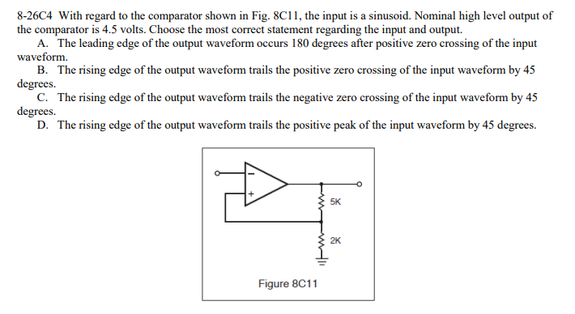

I recently took the FCC Ship Radar Endorsement (Element 8) exam. It was an interesting experience and I recommend everyone check it out. As with all FCC exams, the question pools are in the public domain, including the answers. There are a few questions that I'm not completely sure about, and a few that I suspect might not be right.
There are two questions in topic 26 related to op-amp comparators. The second question (8-26C6) makes complete sense. This is a classic comparator with hysteresis:
The power supplies aren't shown on the diagram so there is some ambiguity in the question, but the fact that the nominal high-level is given to be +4.5V implies that we are dealing with a 4.5V system (or maybe 5V). More importantly, we need to assume that the question is based on a split-rail power supply of +/-4.5V. That would be the traditional arrangement. Knowing that the FCC expected answer is choice "D" (+1.285V and -1.285V) further confirms the theory that a split supply should be assumed.
A quick examination of the circuit shows that there is hysteresis in the feedback loop and that the trip points should be 28% of the supply, or around +/- 1.3 volts. Just to be sure, here's the circuit in LTSpice:
And here's the simulated input (green) and output(blue). Just as expected, the transition of the comparator output is happening around 1.3. All good.
But question 8-26C4 is strange. Here's the original text:
The FCC expected answer is A: "the leading edge of the output waveform occurs 180 degrees after the positive zero crossing of the input waveform." When I studied this question I made these assumptions:
Unless I'm missing something, those points aren't 180 degrees apart. It feels like trip points of a split-supply comparator with hysteresis need to happen above/below the zero crossing of the input by definition.
I wonder if answer "C" is a bit closer? It's hard to tell, but the negative zero crossing is leading the positive edge of the output by a small amount, possibly around 45 degrees of phase.
I think this one has a small error in the diagram, but it's an important one. The question relates to a TTL NAND structure shown in figure 8A6:
The FCC expected answer is B, which would be consistent with a NAND structure. However, I think the diagram is supposed to show a multi-emitter transistor for Q1. The way the diagram is drawn it only has one emitter. I believe it should be something like this:

Here is where I am way out of my depth. This question is related to an antenna synchro transmitter, which is the device that allows a RADAR display be properly aligned with respect to the mechanical orientation of the spinning antenna.
The FCC expected answer is B: two rotor and three stator windings. I'm no expert here, but this seems like more windings than necessary. I've studied this as much as I can and there are different configurations for sure. However, the most common one has one rotor winding and three stator (stationary) windings at 120 degree orientation.
There's a great reference here that shows the basic synchro configuration and includes the math on how to convert the stator signals back to angular position. All of this implies that you don't need two rotor and three stator windings to determine location, unless there is some redundancy being built into the system?